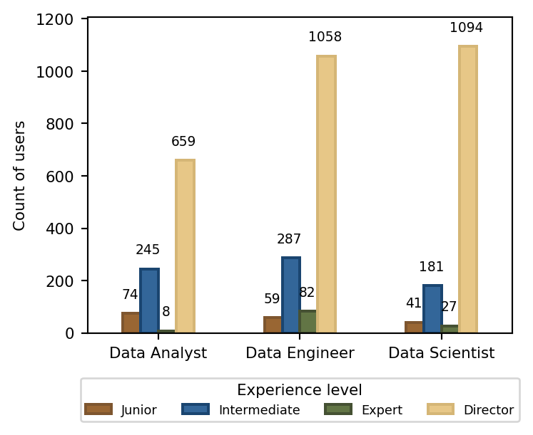
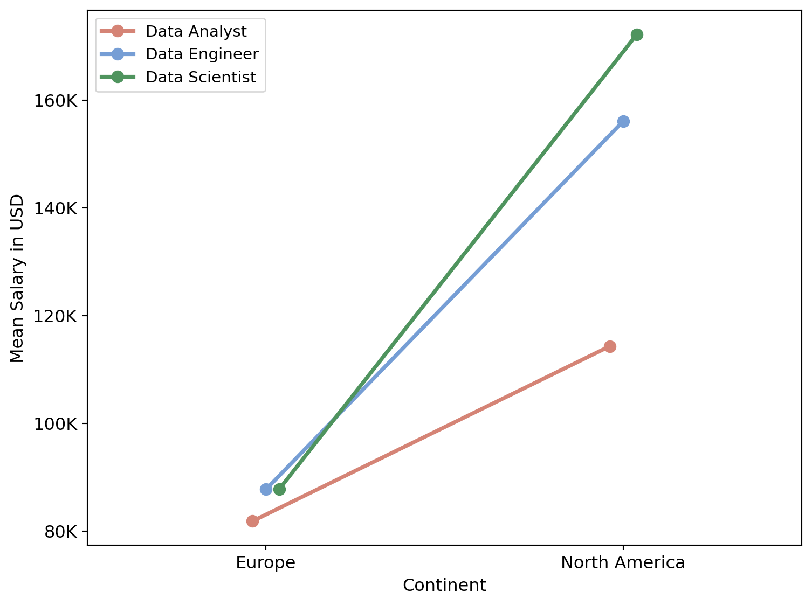
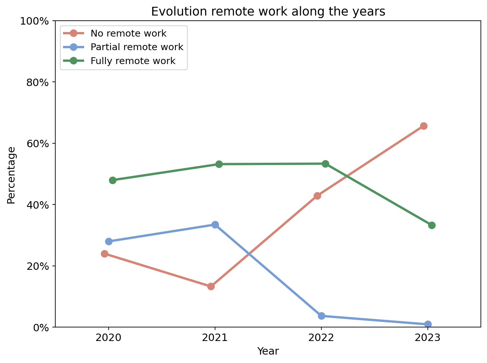
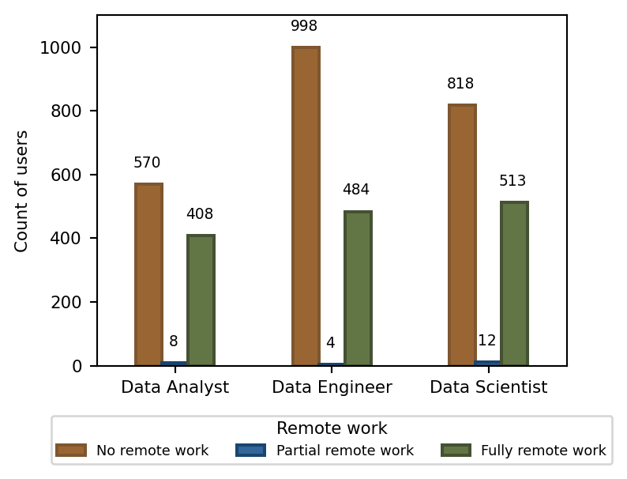
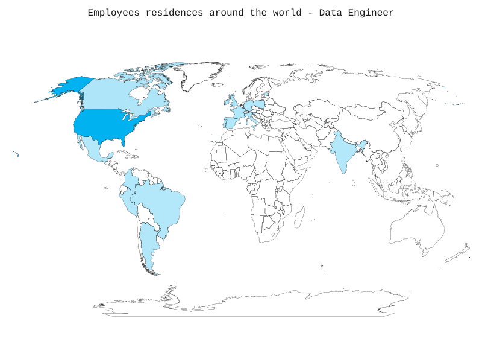
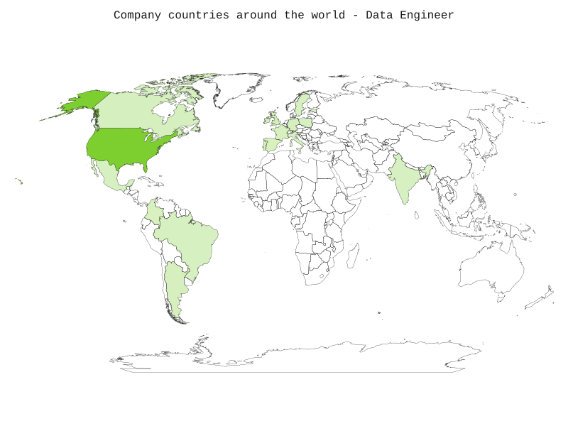
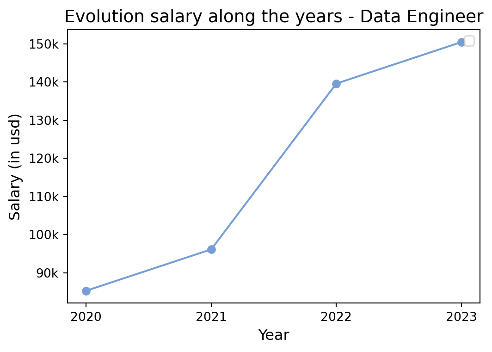

This report aims to provide a general vision about the current situation of work. Most of the information of the dataset used was obtained on 2023. However, information from previous years was used in order to obtain a historical view.
Job and Salary situation focus in 2023
1. OVERVIEW
The table bellow (Table 1) shows the number of user with information in all fields split by year. For year (2023) a total of 6,647 participated in the analysis.
| Year | Count of cases |
|---|---|
| 2020 | 75 |
| 2021 | 218 |
| 2022 | 1651 |
| 2023 | 6647 |
Different jobs were assease in this study. The table bellow (Table 2) shows the ten most popular jobs in 2023. The most common was Data Engineer follow by Data Scientist and Data Analyst. This report will be focus in this jobs, with a different section for each one.
| Job | Count of cases |
|---|---|
| Data Engineer | 1486 |
| Data Scientist | 1343 |
| Data Analyst | 986 |
| Machine Learning Engineer | 754 |
| Applied Scientist | 234 |
| Research Scientist | 208 |
| Analytics Engineer | 173 |
| Data Architect | 144 |
| Research Engineer | 125 |
| Data Manager | 123 |
2. COMPARATION BETWEEN POPULAR JOBS
In this section we are going to explore the differences between Data Engineer, Data Scientist and Data Analyst. We focus in differences related with experience level, the salary and the ratio on remote work. As we said previously, this analysis are focus in the data obtained in 2023 we the exception of the remote work that contains a visualization of the evolution among years.
A. Experience level
The experience level was divided in four categories:
- Entry-level or junior
- Mid-level or intermediate
- Senior-level or expert
- Executive-level or director

| Junior | Intermediate | Expert | Director | |
|---|---|---|---|---|
| Data Analyst | 74 (8%) | 245 (25%) | 659 (67%) | 8 (1%) |
| Data Engineer | 59 (4%) | 287 (19%) | 1058 (71%) | 82 (6%) |
| Data Scientist | 41 (3%) | 181 (13%) | 1094 (81%) | 27 (2%) |
B. Salary
The database used to this report contain information from different countries around the world. Each country use their own currency. For this reason, we need to transform each one in a standar salary. The original database contains a column with this transformation, “salary_in_usd”. As documentation says, “this column displays the salary converted into US dollars (USD).”
The table bellow (Table 4) shows the descriptives for the salary for each job. The distribution of the salary is similr on the three jobs been the Data Scientist the job with the highest wage with a mean of 165,162 USD.
| Job | Count | Min | Max | Median | Mean | Standard Deviation |
|---|---|---|---|---|---|---|
| Data Analyst | 986 | 15680 | 385000 | 105750 | 110901.31 | 43221.618 |
| Data Engineer | 1486 | 17025 | 385000 | 144000 | 150461.12 | 56985.127 |
| Data Scientist | 1343 | 16000 | 370000 | 160000 | 165162.43 | 59993.145 |
However, it could be more interesting compare the salary in relation with the continent where the company is situated. For this question we are going to focus in two continent:
North America: The countries found in our database are United States, Canada and Mexico. A total of 3,494 surveyed users works for companies in Europe.
Europe: The countries found in our database are United Kingdom, France, Slovenia, Spain, Greece, Portugal, Latvia, Germany, Poland, Estonia, Italy, Netherlands, Sweden, Andorra, Norway, Ireland, Switzerland, Croatia and Romania. A total of 288 surveyed users works for companies in Europe.
To check if there are differences on the salary depending on the job and the countrie, a two ways ANOVA was conducted.
Looking in Figure 2 we can see that there is a difference between the salaries in Europe and North America. If we focus in Europe there are no big differences between the jobs been the largest difference between Data Scientist and Data Analyst salaries. In North America, there are there are differences between jobs, continents and in the interaction of both variables been the largest difference between Data Scientist and Data Analyst.The results in tbl-ANOVA2-job-continent-salary shows that there are differences between jobs, continents and in the interaction of both variables. Job is the component on the model that explains better the differences been the effect big to explain the differences in salaries.

| SS | df | F | p-value | η² | |
|---|---|---|---|---|---|
| Job | 1.670e+12 | 2.0 | 314.760 | <0.01 | 0.130 |
| Continent | 1.071e+12 | 1.0 | 403.899 | <0.01 | 0.083 |
| Job * Contienent | 1.175e+11 | 2.0 | 22.141 | <0.01 | 0.009 |
| Residual | 1.002e+13 | 3776.0 | NaN | NaN | NaN |
C. Remote work
In this section we analyze the variable remote work that is defined as the amount of work done remotely. A worker could be classified in one of these three categories:
- No remote work
- Partial remote. When less than 20% of the job is remote.
- Fully remote. When more than 80% of the job is remote.
First of all, we are goin to focus in the evolution along the years. 2020 was a crucial year in the evolution of the evolution of jobs. Now is interesting know how is going this tendence. As we can see in Figure 3 and Table 6. In 2020, the most frequent option of work was Fully remote work follow by Partial remote work and No remote work. If we look this tendence in 2023 we can see that the most frequent option is No remote work follow by Fully remote work and Partial remote work

| No remote work | Partial remote work | Fully remote work | |
|---|---|---|---|
| 2020 | 18 (24%) | 21 (28%) | 36 (48%) |
| 2021 | 29 (13%) | 73 (33%) | 116 (53%) |
| 2022 | 709 (43%) | 61 (4%) | 881 (53%) |
| 2023 | 4,369 (66%) | 63 (1%) | 2,215 (33%) |
Now is interesting to know if this tendency is similar between the different jobs. For this we will focus only in the current year, 2023. In this section we are going to compare if there are differences between jobs in each option of work. Comparations between each modality of work in a specific job will be analysed in each job section.
If we focus only in the work modality, the most frequent option is Partial remote work, follow by Partial remote work. The Fully remote work is the modality of work less frecuent. We can see that
No remote work: The are no differences between the jobs in relation with the amount of workers doing work in place.
Partial remote work: The are no differences between the jobs in relation with the amount of workers doing work in place.
Fully remote work: The are no differences between the jobs in relation with the amount of workers doing work in place.

| No remote work | Partial remote work | Fully remote work | |
|---|---|---|---|
| Data Analyst | 570 (58%) | 8 (1%) | 408 (41%) |
| Data Engineer | 998 (67%) | 4 (0%) | 484 (33%) |
| Data Scientist | 818 (61%) | 12 (1%) | 513 (38%) |
3. DATA ENGINEER
A. Distribucion around the world (emplyee_residence and company location) and company size
Figure 5 and Figure 6 shows the distribution of employees and companies around the world in relation with Data Engineer. As we can see, most of the employees and most of the companies are in United States. The countries where the number of employees is different from the companies are United States, Canada, Germany, Portugal, Peru, and Sweden. For more information see Table 8.
| Countries | Employees residence | Company country | Countries | Employees residence | Company country |
|---|---|---|---|---|---|
| United States | 1340 | 1339 | India | 2 | 2 |
| United Kingdom | 67 | 67 | Italy | 2 | 2 |
| Canada | 26 | 27 | Mexico | 2 | 2 |
| Spain | 9 | 9 | Poland | 2 | 2 |
| Colombia | 8 | 8 | Portugal | 2 | 3 |
| France | 7 | 7 | Slovenia | 2 | 2 |
| Germany | 7 | 6 | Peru | 1 | - |
| Argentina | 4 | 4 | Ireland | 1 | 1 |
| Estonia | 2 | 2 | Sweden | - | 1 |
| Brazil | 2 | 2 |


In relation with the size of the companies, the classification was created based on the average of people that work in the company during the years. Three kind of companies were use:
Small company(S): Less than 50 employees.
Medium company (M): Between 50 and 250 employees.
Large company (L): More than 250 employees.
Table 9 shows the number of employees working in each type of company segmented by continent. As we can see for Asia-Pacific there is not predominant company size. In Europe the predominant company size is medium. In North America the predominant company size is medium. Finally, in South America the predominant company size is medium. As summary, most of the employees in this study works in companies of medium size. A chi-square analysis was computed to see if the differences in the number of employees working for companies of different size where significative (Table 10). As a conclusion, there are differences between the number of people working in medium companies versus large and small companies but there are no differences between large and small companies.
| Continent | Large company | Medium company | Small company |
|---|---|---|---|
| Asia-Pacific | 1 | 1 | 0 |
| Europe | 7 | 94 | 1 |
| North America | 31 | 1337 | 0 |
| South America | 0 | 14 | 0 |
| Chi-square | p-value | |
|---|---|---|
| Large vs Medium | 26.100 | <0.01 |
| Large vs Small | 4.167 | 0.244 |
| Medium vs Small | 14.054 | <0.01 |
B. Salary diferences
As we see in the previous section Section 2.2 the mean salary of a Data Engineer in 2023 was 150461.1204576043. In this section we are going to analysis the differences in salary for Data Engineer in relation to the year and to the country
First of all, we are going to check if there are differences in the mean salary between the years. Figure 7 contains a representation of the mean salary along the years, showing that the trend in wages is upward.

As we can detect some differences at first galance, an ANOVA was computed to see if that differences are real. Table 11 contain the results. The conclusion that we can extract is that there are differences in salary between jobs. It is interesting know the differences between each year. Table 12 shows de result of T-test with the salary means for each year and the conclusion extracted. We can say that there are differences in the mean salary between consecutive years except between 2020 and 2021
| SS | df | F | p-value | η² | |
|---|---|---|---|---|---|
| Year | 1.552e+11 | 1 | 48.294 | <0.01 | 0.023 |
| Residual | 6.497e+12 | 2022 | nan | nan | nan |
| Year A vs Year B | Mean Year A | Mean Year B | T | p-value | Conclusion |
|---|---|---|---|---|---|
| 2020 vs 2021 | 85301.38 | 96143.08 | -0.658 | 0.514 | No differences |
| 2020 vs 2022 | 85301.38 | 139589.89 | -3.480 | <0.01 | Diferences |
| 2020 vs 2023 | 85301.38 | 150461.12 | -4.112 | <0.01 | Diferences |
| 2021 vs 2022 | 96143.08 | 139589.89 | -4.580 | <0.01 | Diferences |
| 2021 vs 2023 | 96143.08 | 150461.12 | -5.735 | <0.01 | Diferences |
| 2022 vs 2023 | 139589.89 | 150461.12 | -3.675 | <0.01 | Diferences |
C. Differences in remote work in 2023
D. Differences in employment type
PT: Part-time FT: Full-time CT: Contract FL: Freelance